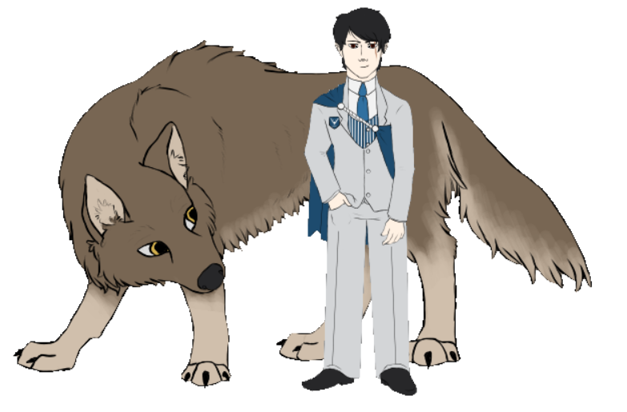

Erik and Ava
About: Despite being a vampire and a werewolf, Erik and Ava are madly in love. Their romance has had its obstacles due to the differences between their species, but that love has prevailed strong and true. Erik is very chatty and willing to tell you all about his life, but he'll want to keep an eye on Ava during full moons.
This is start of updates log.
Riccardo

About: Riccardo is a homeless and exiled vampire prince. He's jumpy and not easy to trust from the hard life he's lived. It's up to you, the user, to gain his trust and show him good people still exist in the world.
Update 7 (10/22/2022)
- His face no longer flickers with certain surfaces
- His blood need will no longer reset to fast when he is booted up
- He will now only reject blood when he’s truly full
- Various bugs in surfaces are now fixed
- Picking up an item late in his relationship is now more likely
- His check menu will now give the user a hint when asking how Riccardo feels about them
- His slow mode for his blood need is now slower by a whole hour
- A few pieces of new dialogue for his stuffed cat and giving him blood.
- His blood need now displays as a percentage!
————————————————————
Update 6 (2/25/2022)
- Riccardo was given some art adjustments to be true to his character which evolves a little every year.
- Riccardo’s thirst need is now more prevalent. He has a fast and slow mode that affects how quickly he gets thirsty and needs blood. When he is very thirsty, his appearance will change slightly, and he will not talk about anything but the fact he is thirsty.
- Riccardo has new menu options! He now has an ask menu on which I can build upon but already has a new juicy nugget for the user to poke at him about. He also has a check option that the user can learn how thirsty he currently is as well as a short blurb about how he feels about them.
- Some new surfaces have been added to pop up throughout his time on the user’s screen.
- New dialogue has been added both from the menu and in his random talk.
- Minor errors in grammar, coding, and surfaces have been fixed.
————————————————————
Updates 4 and 5 (7/24/2021)
- Riccardo can now hold Obsidian from Zi’s fan characters Dust and Obsidian. Update 4 was the release of this nifty feature so that Riccardo can both communicate with Dust and hold the precious kitty, Obsidian.
- Update 5 is a fix to a lot of bugs found in the above features and a few tweaks to some dialogue
————————————————————
Update 3 (11/18/2020)
- His network updating is finally completely hammered out and works entirely. This will make updating him in the future much easier for me and less annoying for anyone who enjoys his company! :D
————————————————————
Update 2
- Bug fixes in dialogue and surfaces discovered after Update 1 was published.
- A few lines of new dialogue spotted here and there. Not a lot, but hopefully enough to make updating him again so soon less annoying.
- There’s a chance of finding him a scarf in his mini game, now! When you find the scarf, he will start wearing it! just like he will the blanket after you’ve been nice enough to give him blankets!
————————————————————
Update 1
- All surfaces redrawn in a cleaner, better art style with some improvements in anatomy.
- He was brought up to date to not have to use PNAs anymore, which means updating him with future surfaces will be easier for me and the art is a lot cleaner because of it.
- He now has a dressup item! After you’ve given this homeless and exiled prince some blankets, he will show up with a blanket over his lap!
- He got some new dialogue and some tweaking to old dialogue to be more in character. He now curses a lot less, but he’s no less grumpy and confused by your interest in him!